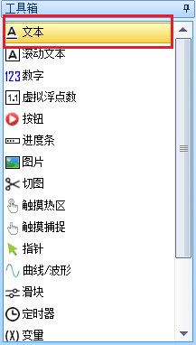
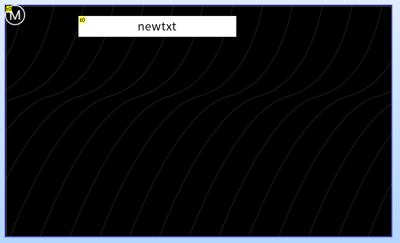
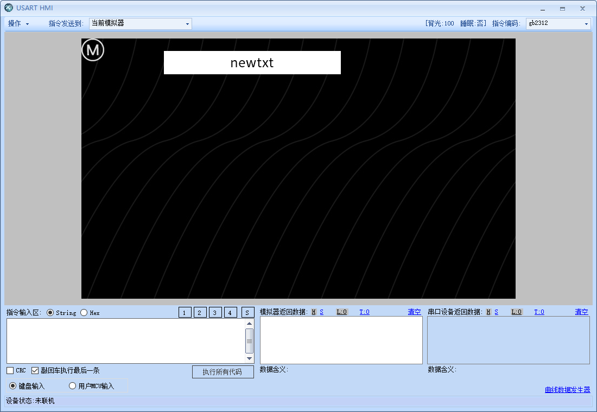
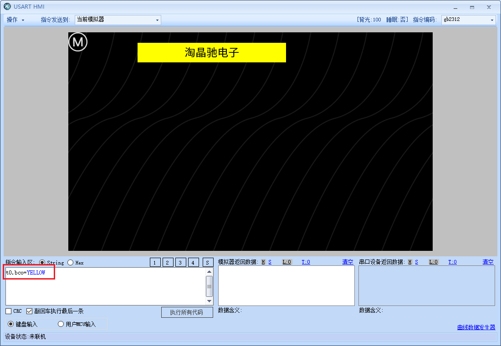

1.在没有串口屏的情况下进行调试
提示
淘晶驰串口屏的模拟器功能非常强大,您可以在没有串口屏实物的情况下通过模拟器进行调试
切换到main页面,点击工具箱中的文本,在main页面新建一个文本控件
可以通过鼠标移动控件的位置和调整控件的大小
点击调试,进入调试页面
可以在底部的指令输入区输入指令,并点击执行来实现控件赋值,比如我们让文本控件t0显示”淘晶驰电子”

指令如下:
1 t0.txt="淘晶驰电子"
注意
赋值指令中的引号是英文的””而不是中文的“”
也可以修改文本控件的背景颜色,可以通过指令修改的是控件的”绿色属性”
指令如下:
1 t0.bco=YELLOW
注意
t0.txt=”淘晶驰电子”和t0.bco=YELLOW的区别是一个加了引号,一个没有加引号,这是因为txt是字符串,bco则是整形,目前只有txt,path,dir,filter是字符串,其他均为整形